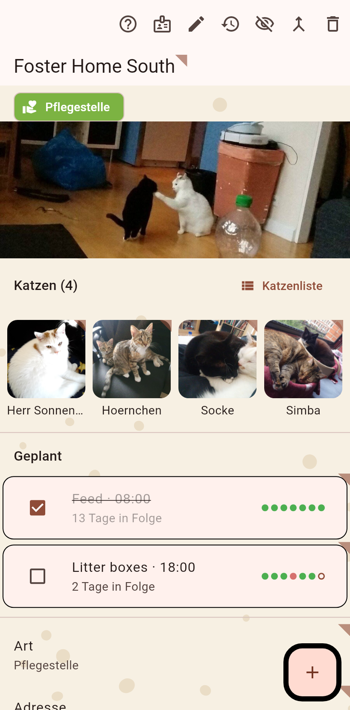

Alles zu einem Ort: seine Katzen, seine Felder (Adresse, Kontakt, Art), was dort geplant ist und seine Historie.

Die Katzen, die hier leben, mit ihren Gesichtern, dann die Pläne, dann die Felder. Die Seite ist erst nur zum Lesen; der Stift in der Leiste schaltet das Bearbeiten ein, dort wird auch ein neues Feld angelegt. Ein langer Druck auf ein Feld bearbeitet es sofort; ein langer Druck auf eine Katze verschiebt, versteckt oder öffnet sie. Die Uhr an einem Feld öffnet seinen Verlauf.
Ein hier angelegter Termin kann mehrere Katzen mitnehmen, etwa eine Kastrationsfahrt: mitkommende Katzen anhaken, einmal abschließen, nicht behandelte abhaken. Die bleiben geplant.
Hilfe, die Karte, der Stift, die Zeitleiste, dann was passt: verstecken, zusammenführen, in einen anderen Katalog verschieben, löschen. Der Titel trägt das Katzenohr: ein langer Druck benennt die Kolonie um.